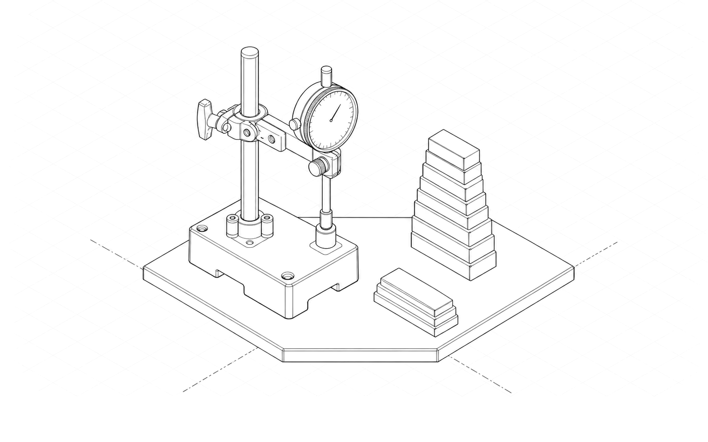
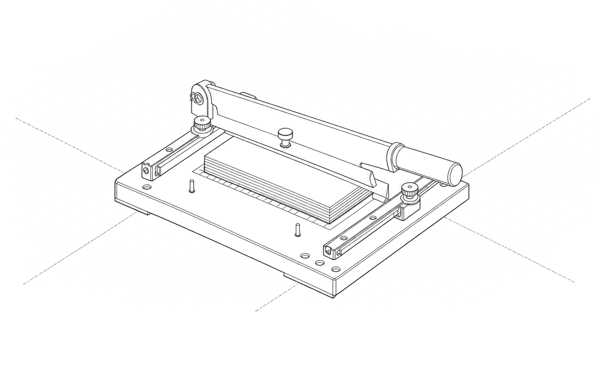
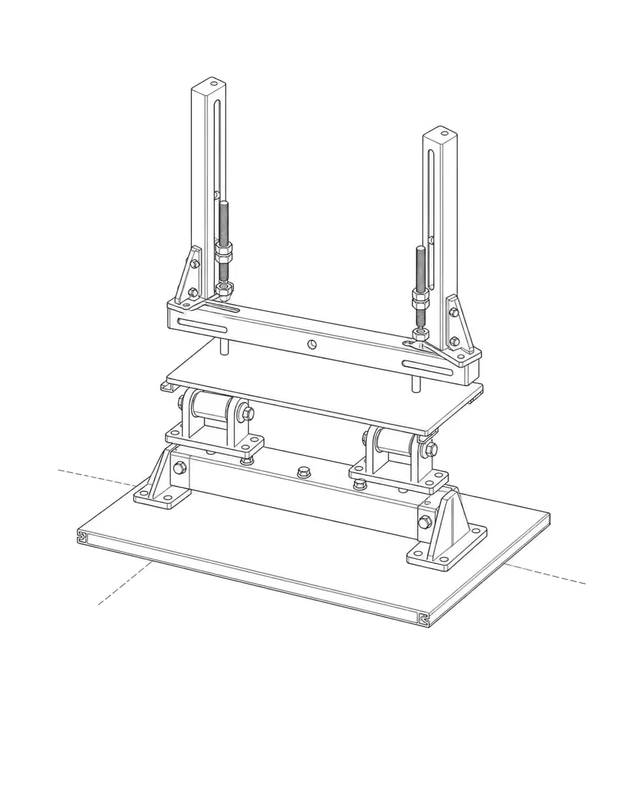
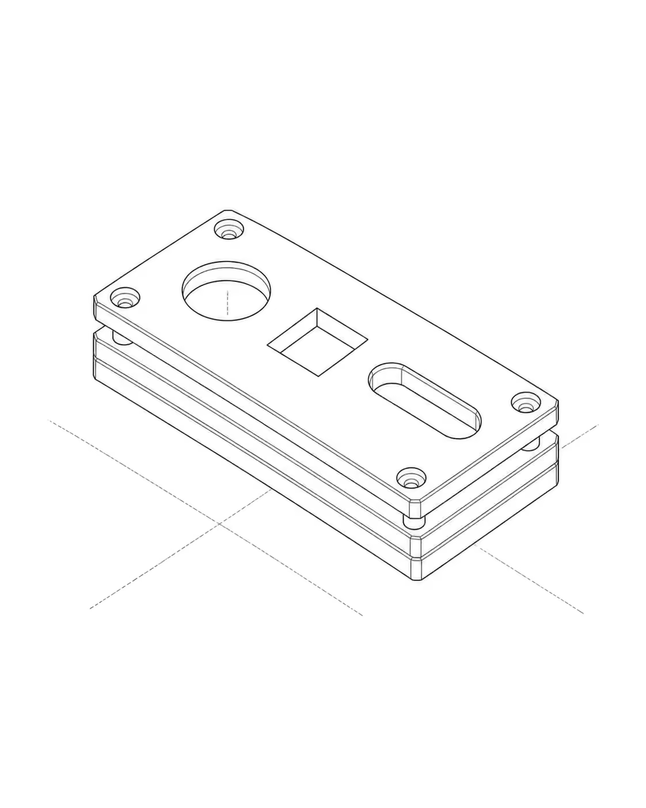

MULTI-AGENT INFRASTRUCTURE · DESIGN OS
Universal Multimodal Knowledge Pipeline & Epistemic Stopping Gate.
Zero-dependency ingestion (PDF, video, audio, diagrams, web), 3-tier cost orchestration, and formal logic stopping gates for autonomous AI coding agents.



Figure 1: Fully seated mechanical assembly — Universal Multimodal Ingestion & Epistemic Verification Engine.
2:1 isometric · pure greyscale hairline #202020 · seated stateSystem Specifications
- Repository
- jangtrinh/
design-os-knowledge-builder - Modalities
- PDF · Audio · Video · Images · WebNative demux & OCR
- Contract
- UKMC.v1 SpecificationCryptographic provenance
- Stopping Gate
- Formal Logic ($G_t \land S_t$)11/11 scenarios verified
- 64K Defense
- 3-Tier Cost Routingevidence.jsonl atomic ledger
- License
- MIT PermissiveFree commercial/personal use
Why Design OS Knowledge Builder, compared with alternatives
What this pipeline provides that ad-hoc scraping scripts and closed SaaS do not. Real engineering advantages first, followed by honest trade-offs.
Universal Multimodal Ingestion
Converts PDFs, videos (timestamped Whisper transcripts + scene cuts), architecture diagrams (live Mermaid.js), and technical web docs into unified UKMC.v1 Markdown.
Formal Logic Epistemic Stopping Gate
Replaces arbitrary loop counters with mathematical assertions: dual hard/soft gates ensure agents only stop when evidence is truly sufficient, or cleanly label budget exhaustion.
64K Token Cutoff Defense
Streams atomic evidence units (500B–1KB) directly to evidence.jsonl. Fast models like Gemini 3.8 Flash never truncate, because final compilation is deterministic Python.
5-Perspective Council Peer Review
Knowledge is cross-examined by Builder (code), Red-Team (failure modes), Architect (contracts), Auditor (costs), and Operator (observability) lenses before graduation.
Where traditional platforms win: Cloud web GUIs (like NotebookLLM or Perplexity Spaces) offer instant consumer search and managed hosting. If your team does not need git version control, cryptographic provenance, or automated AI agent execution, those tools are faster to start with.
5-Stage Ingestion Pipeline
Raw media is ingested, demuxed, normalized, verified, and indexed with zero human intervention.

Figure 2: 5-Stage Multimodal Ingestion Pipeline (PDF, Audio/Video, Diagram, Web) in docked assembled state.
guillotine trimmer seated flat on platen · parallel track registration- Asset Gate: Calculates SHA-256 fingerprint, identifies MIME type, and wraps raw input in quarantine boundaries.
- Multimodal Extractors: Runs Tier 0 local utilities (
pdftotext,ffmpegdemux) followed by VLM transcription & Mermaid diagram generation. - Contract Normalization: Formulates UKMC.v1 YAML frontmatter, source anchors, and KaTeX math formatting.
- Verification Gate: Machine linter checks bilateral rules, failure mode coverage, and link integrity.
- Atomic Publish: Performs atomic file writes (
write_atomic) and builds search index (index.json).
Epistemic Stopping Gate (When is it ENOUGH?)
A rigorous mathematical definition of epistemic sufficiency vs deficiency for autonomous loops.

Figure 3: Epistemic Stopping Gate seated on calibration pins — evaluated against 512 boolean state combinations.
formal logic passed · verified by Codex Native AstraSTOP_SUFFICIENT
100% of required claims verified by independent sources and code execution; semantic saturation achieved ($\le 2\%$ delta over 3 rounds).
DEEPEN
Missing claims, single-source bias, version drift, or untested failure modes detected → triggers a targeted search probe.
PAUSE_BUDGET
Loop iterations or token allocations ran out while claims remain unverified. Clearly marked as incomplete (never misreported as done).
ABSTAIN_BLOCKED
Blocked upstream by paywalls, anti-scraping, or broken infrastructure without viable fallback.
The 5-Perspective Council
Before any knowledge entry is graduated into the core library, it must pass 5 peer-review lenses.

Figure 4: 5-Perspective Verification Comparator seated on calibration master block.
Builder · Red-Team · Architect · Auditor · OperatorInstall once
Clone the repository and install with pip in editable mode.
git clone https://github.com/jangtrinh/design-os-knowledge-builder.git
cd design-os-knowledge-builder
pip install -e .A practical loop
- Ingest Multimodal Source:
python3 -m knowledge_builder.cli ingest ./docs/whitepaper.pdf - Evaluate Stopping Gate:
python3 -m knowledge_builder.cli gate --run-id run-01 --required 5 --verified 5 --sources 3 - Lint UKMC Contract Conformance:
python3 -m knowledge_builder.cli lint ./knowledge/architecture/sample.md - Compile Machine-Readable Search Index:
python3 -m knowledge_builder.cli index --dir ./knowledge
Frequently asked questions
What is Design OS Knowledge Builder?
Design OS Knowledge Builder is an open-source, local-first multi-agent toolchain that turns messy technical assets (PDFs, talks, diagrams, web pages) into verified, structured Markdown under the Universal Knowledge Master Contract (UKMC.v1).
How does the Epistemic Stopping Gate avoid infinite research loops?
It computes dual predicates: Hard Gate $G_t$ checks required claim coverage, independent source threshold, code reproduction, and counterevidence coverage. Soft Gate $S_t$ checks semantic saturation delta (≤ 2% across 3 rounds). If budget runs out first, it explicitly triggers PAUSE_BUDGET instead of hallucinating completion.
How does it protect small models like Gemini 3.8 Flash from 64K token cutoffs?
Evidence atoms are written sequentially to evidence.jsonl. State is checkpointed in state.json so turns can resume idempotently. Final markdown assembly is performed deterministically with zero LLM generation tokens.
Can this be used with Claude Code, Codex Native, and Antigravity?
Yes. The packaged skill es-knowledge-forge can be installed into any AI harness. Standard CLI subcommands run seamlessly across all major AI agent runtimes.
What license is Design OS Knowledge Builder released under?
It is released under the permissive MIT license, permitting free commercial and private usage.
Ecosystem & Related Projects
Explore companion toolchains and open-source infrastructure from the DESIGN:OS ecosystem.